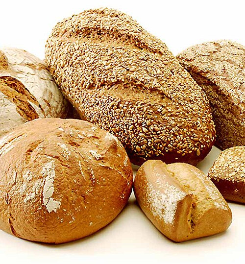

Pão (do latim "pane")[1] é um alimento obtido pelo cozimento de uma massa alimentar de consistência elástica, elaborada basicamente com farinha de cereal (com proteínas formadores de glúten, geralmente de trigo), água, sal/açúcar.[2] A evidência de ocorrência mais antiga de pão é na Europa datado em 30 mil anos a.C..
